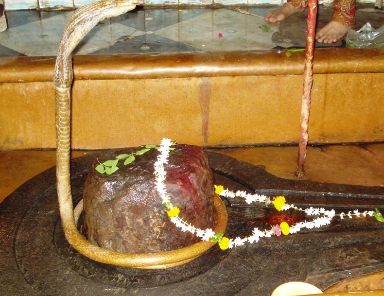

<?xml version="1.0" encoding="UTF-8"?><rss version="2.0"
	xmlns:content="http://purl.org/rss/1.0/modules/content/"
	xmlns:wfw="http://wellformedweb.org/CommentAPI/"
	xmlns:dc="http://purl.org/dc/elements/1.1/"
	xmlns:atom="http://www.w3.org/2005/Atom"
	xmlns:sy="http://purl.org/rss/1.0/modules/syndication/"
	xmlns:slash="http://purl.org/rss/1.0/modules/slash/"
	>

<channel>
	<title>Jyeshteshwar &#8211; Varanasi Temples</title>
	<atom:link href="index.html" rel="self" type="application/rss+xml" />
	<link>../../../../../index.html</link>
	<description>Temples of Varanasi as referred to in Kashi Khand</description>
	<lastBuildDate>Thu, 19 Jun 2025 05:16:46 +0000</lastBuildDate>
	<language>en-US</language>
	<sy:updatePeriod>hourly</sy:updatePeriod>
	<sy:updateFrequency>1</sy:updateFrequency>
	<generator>https://wordpress.org/?v=4.6.29</generator>
	<item>
		<title>JYESHTESHWAR</title>
		<link>../../../../../shiva-temples/jyeshteshwar/index.html</link>
		<pubDate>Sun, 09 May 2010 09:37:23 +0000</pubDate>
		<dc:creator><![CDATA[admin]]></dc:creator>
				<category><![CDATA[Jyeshteshwar]]></category>
		<category><![CDATA[Other Shiva Temples (E-K)]]></category>
		<category><![CDATA[Shiva Temples]]></category>
		<category><![CDATA[jyes]]></category>
		<category><![CDATA[jyesht]]></category>
		<category><![CDATA[jyeshteshwar]]></category>

		<guid isPermaLink="false">../../../../../p=335.html</guid>
		<description><![CDATA[The importance of Jyeshteshwar Ling has been described amply in Kashi Khand, Chapter 63.  Lord Shiva said, in the Jyeshta Month (May 20 to June 20), Chaturdasi day before Poornima (Shukla Paksha Chaturdasi), people should have darshan of Jyeshteshwar Ling and they will attain all happiness in life and heaven after death.  If the above [&#8230;]]]></description>
				<content:encoded><![CDATA[<p>The importance of Jyeshteshwar Ling has been described amply in Kashi Khand, Chapter 63.  Lord Shiva said, in the Jyeshta Month (May 20 to June 20), Chaturdasi day before Poornima (Shukla Paksha Chaturdasi), people should have darshan of Jyeshteshwar Ling and they will attain all happiness in life and heaven after death.  If the above day falls on Monday with Anuradha (Anusham) Star, it is all the more auspicious.</p>
<p>Just as darkness disappears with Sunrise, all the sins accumulated over several years disappear with darshan of Jyeshteshwar Ling (Kashi Khand, Chapter 63).  A person who performs Shraaddhha ceremony for his ancestors with ghee (clarified butter) etc. near Jyeshteshwar Ling does a great service to his ancestors.</p>
<p></p>
<p style="text-align: center;"><strong>(JYESHTESHWAR)</strong></p>
<p>A person who does Pooja of Jyeshteshwar and feeds a Shiva Devotee gets the punya equivalent to feeding a crore people (Kashi Khand, ibid).</p>
<p>&nbsp;</p>
<p><strong>&#8212;&#8212;&#8212;&#8212;&#8212;&#8212;&#8212;&#8212;&#8212;&#8212;&#8212;&#8212;&#8212;&#8212;&#8212;&#8212;&#8212;&#8212;&#8212;&#8212;&#8212;&#8212;&#8212;&#8212;&#8212;&#8212;&#8212;&#8212;&#8212;&#8212;&#8212;&#8212;&#8212;&#8212;-</strong></p>
<p><strong> </strong></p>
<p><strong>Kashi Khand, Chapter 63, Shlok 84</strong></p>
<p><strong> </strong></p>
<p><strong>अस्मिन् ज्येष्ठेश्वरक्षेत्रे संभोज्य शिवयोगिन :</strong></p>
<p><strong>कोटिभोज्यफलं संयगेकैकपरिसन्ख्यया</strong></p>
<p>&nbsp;</p>
<p><strong>Lord Shiva says, “If one staunch Shiv Bhakt is provided food in Jyeshteshwar area, the devotee gets punya benefits of feeding one crore persons.  </strong></p>
<p><strong> </strong></p>
<p><strong>&#8212;&#8212;&#8212;&#8212;&#8212;&#8212;&#8212;&#8212;&#8212;&#8212;&#8212;&#8212;&#8212;&#8212;&#8212;&#8212;&#8212;&#8212;&#8212;&#8212;&#8212;&#8212;&#8212;&#8212;&#8212;&#8212;&#8212;&#8212;&#8212;&#8212;&#8212;&#8212;&#8212;&#8212;&#8212;</strong></p>
<h1>LOCATION OF THE TEMPLE</h1>
<p>Jyeshteshwar temple is located at K-62/144, Sapt Sagar Mohalla. The temple is approachable from a famous locality called Maidagin.  People can approach Maidagin by Auto or Cycle Rickshaw or even car.  From Maidagin it is advisable to walk on foot. A famous landmark near this temple is the Kashi Devi Temple.</p>
<p>&nbsp;</p>
<p><strong>Please watch our YouTube Video about Jyeshteshwar at following Link</strong></p>
<p>&nbsp;</p>
<p><a href="https://www.youtube.com/watch?v=ZrVdSI1zOKI&amp;t=11s">https://www.youtube.com/watch?v=ZrVdSI1zOKI&amp;t=11s</a></p>
<p>&nbsp;</p>
<p>&nbsp;</p>
<p><strong><span style="text-decoration: underline;">TYPES OF POOJAS</span></strong></p>
<p>The temple is open for worship from 05.30 a.m. in the morning to 12.30 p.m. and from 05.00 p.m. to 8.30 p.m.  Aarties are held both in the morning and evening.</p>
<p>According to old timers, the temple timings are flexible and the poojari may be requested to open the temple as per the convenience.</p>
]]></content:encoded>
			</item>
	</channel>
</rss>
